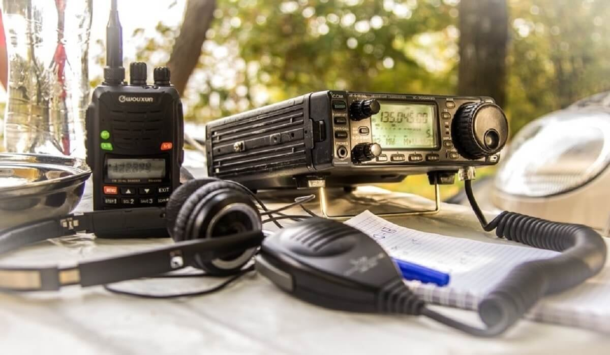
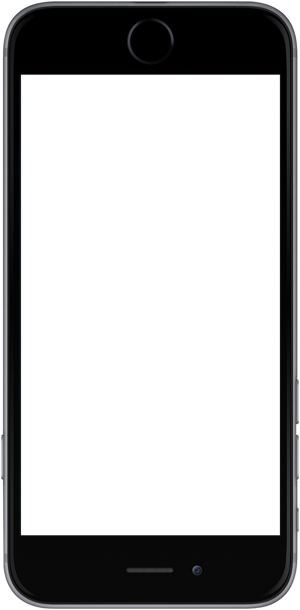

Радиолюбители LPD диапазона (433-434 MHz) города Тольятти
Общая вызывная частота 434.750 MHz, запасной канал 434.775 MHz

Работает FRN сервер для доступа к радиоэфиру через смартфон
Доступны каналы:
"TLT-Repiter" - канал, в котором установлен шлюз в радиоэфир г. Тольятти на частоте 434.750 МГц, шлюз двусторонний
"UL-Repiter" - канал временно не работает в котором установлен кросслинк на шлюз в радиоэфир г. Ульяновск, шлюз двусторонний
"Talks" - канал для общения пользователей без выхода в эфир
"TEST" - канал с попугаем, который повторяет все сказанное, для настройки уровней микрофона и громкости звука
Список подключенных пользователей на FRN сервере:

Предупреждение!
Скачивая программу и регистрируясь в нашей FRN сети, вы понимаете и безусловно принимаете условия пользования этим сервисом. А именно:
Вы соглашаетесь, что запрещена противоправная деятельность в любом ее виде и проявлении.
Вы соглашаетесь, что ведется запись всех переговоров, которые могут быть предоставлены силовым структурам.
Вы соглашаетесь, что коммерческое использование сети недопустимо и организаторы сервиса не несут отвественности за возможные убытки, полученные в результате использования этого сервиса.
Вы соглашаетесь, что мнения и высказывания корреспондентов, являются исключительно их личным мнением, а не мнением организаторов сервиса.
Вы соглашаетесь, что опыт использования этого сервиса может не оправдать ваших ожиданий.